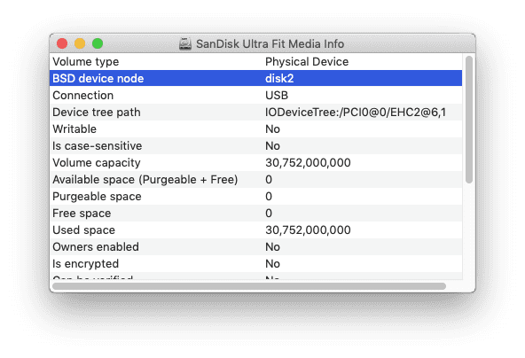
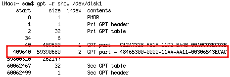

As you may know, the firmware for the
1st-generation Apple TV was a modified version of Mac OS X Tiger. Back
in the day, many members of the Mac community were able to get full
versions of Mac OS X running on the Apple TV. Unfortunately, patched
disk images with the fruits of their labor have been lost to time, so I
took it upon myself to dig up instructions on how to set up an
installation from scratch, and have uploaded the resulting installation
as a ready-to-use disk image!
In this guide, we will be using the disk image to create a bootable USB drive with Mac OS X Leopard 10.5.8 for the Apple TV.
What you will need:
Preparing the USB drive
Making the USB drive bootable
Now, we need to change the partition type so that the USB drive is bootable on the Apple TV. Once these steps are completed, the drive will no longer be readable by the Mac.
First, close Disk Utility, and open Terminal.
Run
In the output, find the line with index 2. Note the start and size values, as we will need them later.
Run
If it says the disk was not unmounted, wait a few moments and try again.
During the following steps, you may see a warning from Mac OS X that a disk is unreadable. Click Ignore if this alert opens.
Run
Run
Run
All done!
Booting Mac OS X on the Apple TV
Now comes the best part! The USB drive can be removed from the Mac and plugged into the Apple TV. Plug a USB hub into the Apple TV so that you can connect the USB drive, as well as a keyboard and mouse. Once you plug in the power cable, the Apple TV will boot into the Mac OS X Setup Assistant, where you can set up a user account and begin using Mac OS X! If you'd like to permanently install Mac OS X to the internal hard drive, you can follow the steps in the "Preparing the USB drive" section, but with the internal drive rather than a USB drive (and you can skip the section required to make USB drives bootable).
Things to keep in mind:
Credits
I can't take most of the credit for this, as it is based on the hard work of others in the Mac community. Here are the resources I used to make this possible:
In this guide, we will be using the disk image to create a bootable USB drive with Mac OS X Leopard 10.5.8 for the Apple TV.
What you will need:
- Mac running Mac OS X Tiger (10.4.x) up to macOS Monterey (12.x)
- 1st-generation Apple TV
- USB drive (16 GB or larger)
- Powered USB hub (for connecting the USB drive at the same time as a keyboard and mouse)
- Monitor or TV connected to the Apple TV via HDMI or component
- Audio connected to the Apple TV via the audio jacks (HDMI audio does not work)
- Internet Archive: https://archive.org/details/mac-os-x-leopard-apple-tv
- Macintosh Garden: https://macintoshgarden.org/apps/mac-os-x-apple-tv-1st-generation
Preparing the USB drive
In Disk Utility, select the drive,
then select the Partition tab. Set the volume scheme to 1 partition,
name it Apple TV HD, and set the format to Mac OS Extended (Journaled).
Then, click Options, ensure GUID Partition Table is selected, and click
OK. Apply the changes.
Once formatting is complete, we can restore the disk image to the USB drive. First, scan the image for restore by choosing the Images menu > Scan Image for Restore, then select the downloaded image.
Once the scan is complete, select the Restore tab in the Disk Utility window. Drag the disk image to the source field, and drag Apple TV HD to the destination field. Select Erase destination, then Restore.
Once the restore is complete, select the USB drive in the source list, then click Info in the toolbar. Note the disk identifier listed in this window, as we will need it in the next section.
Once formatting is complete, we can restore the disk image to the USB drive. First, scan the image for restore by choosing the Images menu > Scan Image for Restore, then select the downloaded image.
If you're using Tiger, this option might not work. Instead of scanning the image, mount it by double-clicking the disk image in Finder. Then, proceed to the next steps.
Once the scan is complete, select the Restore tab in the Disk Utility window. Drag the disk image to the source field, and drag Apple TV HD to the destination field. Select Erase destination, then Restore.
Once the restore is complete, select the USB drive in the source list, then click Info in the toolbar. Note the disk identifier listed in this window, as we will need it in the next section.
In Disk Utility, select the drive, then click Erase in the toolbar. Enter the following options, then click Erase:
Once formatting is complete, we can restore the disk image to the USB drive. First, scan the image for restore by choosing the Images menu > Scan Image for Restore, then select the downloaded image.
Once the scan is complete, select the new Apple TV HD partition, then click the Restore button in the toolbar. Click Image..., select the disk image, then click Restore.
Once the restore is complete, select the USB drive in the source list, then click Info in the toolbar. Note the BSD device node listed in this window, as we will need it in the next section.
- Name: Apple TV HD
- Format: Mac OS Extended (Journaled)
- Scheme: GUID Partition Map
Once formatting is complete, we can restore the disk image to the USB drive. First, scan the image for restore by choosing the Images menu > Scan Image for Restore, then select the downloaded image.
Once the scan is complete, select the new Apple TV HD partition, then click the Restore button in the toolbar. Click Image..., select the disk image, then click Restore.
Once the restore is complete, select the USB drive in the source list, then click Info in the toolbar. Note the BSD device node listed in this window, as we will need it in the next section.

First, we need to allow various OS
utilities access to our drives. To do this, open System Preferences,
then select Security & Privacy. Select the Privacy tab, and choose
Full Disk Access from the left-hand list. Click the lock to
authenticate, then click the + button and add the following items:
You should see these four items now in the list:

Now, open Disk Utility. In Disk Utility, select the drive, then click Erase in the toolbar. Enter the following options, then click Erase:
Once formatting is complete, we can restore the disk image to the USB drive. First, scan the image for restore by choosing the Images menu > Scan Image for Restore, then select the downloaded image.
Once the scan is complete, select the new Apple TV HD partition, then click the Restore button in the toolbar. Click Image..., select the disk image, then click Restore.
Once the restore is complete, select the USB drive in the source list, then click Info in the toolbar. Note the BSD device node listed in this window, as we will need it in the next section.
- /Applications/Utilities/Disk Utility
- /Applications/Utilities/Terminal
- /usr/sbin/asr
- /usr/sbin/diskutil
You should see these four items now in the list:
Now, open Disk Utility. In Disk Utility, select the drive, then click Erase in the toolbar. Enter the following options, then click Erase:
- Name: Apple TV HD
- Format: Mac OS Extended (Journaled)
- Scheme: GUID Partition Map
Once formatting is complete, we can restore the disk image to the USB drive. First, scan the image for restore by choosing the Images menu > Scan Image for Restore, then select the downloaded image.
Once the scan is complete, select the new Apple TV HD partition, then click the Restore button in the toolbar. Click Image..., select the disk image, then click Restore.
Once the restore is complete, select the USB drive in the source list, then click Info in the toolbar. Note the BSD device node listed in this window, as we will need it in the next section.
Making the USB drive bootable
Now, we need to change the partition type so that the USB drive is bootable on the Apple TV. Once these steps are completed, the drive will no longer be readable by the Mac.
First, close Disk Utility, and open Terminal.
Run
sudo gpt -r show /dev/diskX where diskX is the disk identifier or BSD device node noted from Disk Utility earlier.In the output, find the line with index 2. Note the start and size values, as we will need them later.

Run
sudo diskutil unmountDisk diskX to unmount the disk.If it says the disk was not unmounted, wait a few moments and try again.
During the following steps, you may see a warning from Mac OS X that a disk is unreadable. Click Ignore if this alert opens.
Run
sudo gpt remove -i 2 /dev/diskX to remove the existing partition entry, which we will re-add in the next step with the correct type.Run
sudo gpt add -b START -s SIZE -i 2 -t "5265636F-7665-11AA-AA11-00306543ECAC" /dev/diskX where START and SIZE are the respective values noted earlier.Run
sudo diskutil unmountDisk diskX to unmount the drive.All done!
Booting Mac OS X on the Apple TV
Now comes the best part! The USB drive can be removed from the Mac and plugged into the Apple TV. Plug a USB hub into the Apple TV so that you can connect the USB drive, as well as a keyboard and mouse. Once you plug in the power cable, the Apple TV will boot into the Mac OS X Setup Assistant, where you can set up a user account and begin using Mac OS X! If you'd like to permanently install Mac OS X to the internal hard drive, you can follow the steps in the "Preparing the USB drive" section, but with the internal drive rather than a USB drive (and you can skip the section required to make USB drives bootable).
Things to keep in mind:
- The first boot might be a bit sluggish, but it should speed right up after a few minutes. The image is a fresh install, never booted, so all of the maintenance processes will run like any other fresh install.
- On my monitor the boot screen turns green, but YMMV. Once booted, the color is correct--if it isn't, unplugging the HDMI cable and plugging it back in should do the trick.
- HDMI audio doesn’t work, so use the other audio outputs. Analog audio is the "Internal Speakers" output, which is not selected by default.
- When logging in, you’ll see an unreadable disk error. This is simply due to Mac OS X not understanding the partition types correctly, and you can ignore it.
- The Apple TV only has 256 MB RAM, so keep this in mind during web browsing and other memory-intensive operations. MenuMeters is pre-installed so that you can keep an eye on usage.
- iCal doesn't open.
- Enjoy!
Credits
I can't take most of the credit for this, as it is based on the hard work of others in the Mac community. Here are the resources I used to make this possible:
- https://web.archive.org/web/20100715164941/http://www.hackint0sh.org/f98/70835.htm
- https://web.archive.org/web/20090512203105/http://www.hackint0sh.org/forum/f98/634.htm
- https://www.insanelymac.com/forum/topic/48201-codec-dumps-from-linux-to-fix-sound-on-osxonatv/
- https://www.insanelymac.com/forum/topic/32859-applehda-solution-work-in-progress/
- https://www.insanelymac.com/forum/topic/143898-voodoopower-123/
- https://archive.org/details/iDeneb-v1.3
- https://wiki.awkwardtv.org/wiki/AppleTV_OS_3.0.2
Last edited: